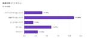

OpenWork Tech Blog
https://techblog.openwork.co.jp/
オープンワークの開発チームが届ける、情報プラットフォームを支える技術と文化
フィード

開発メンバーに出社アンケートをとってみた 1
1
OpenWork Tech Blog
はじめに 編集部の小川です。 一時期は IT 企業において当たり前となりつつあったリモートワークですが、最近では大手企業を中心に出社回帰の動きが見られるようになってきました。そんな中で、当社の出社スタイルは社員にどう思われているのか? を改めて知りたく、開発メンバーに対しアンケートを実施してみました。 結果として見えてきたのは、「必要なときに出社し、それ以外は無理なくリモートで働く」というスタイルです。この記事では、結果をふまえながら今後の出社のあり方について考えてみたいと思います。 前提 回答者の属性 アンケート内容 出社頻度について教えてください 自宅からオフィスまでどれくらいの時間がかか…
8日前

今年もtry! Swift Tokyo 2025 に参加しました！ - iOSエンジニアたちの振り返りトーク
OpenWork Tech Blog
2025/4/9 - 4/11に開催されたtry! Swift Tokyo 2025に弊社エンジニア数名が参加しました！参加メンバーによる振り返りトークの様子をお届けします。
1ヶ月前
開発リーダーに近い役割を経験して学んだこと
OpenWork Tech Blog
Webアプリエンジニアの加瀬です。サブDL（DL = Development Leader）という形で開発を進める中で学んだことについて、いくつか書いてみたいと思います。 開発リーダーのポジションに興味のある方の参考に少しでもなれば幸いです。
1ヶ月前
【新卒エンジニア希望者向け】会社・職種の選び方
OpenWork Tech Blog
オープンワークオフィスの入る渋谷スクランブルスクエア。私は毎月1度だけ出社しています。出典: https://shibuya-scramble-square-office.com/building/ 読者の皆様、こんにちは。 2024年4月に新卒入社し、現在もWebエンジニアとして勤務しております、川口と申します。 今回は、新卒でエンジニアになろうとしている学生に向けて、ご自身に合った会社や職種の選び方を解説します。 この手の記事から完全に主観を排除するのは難しいのですが、なるべく中立かつ幅広い説明になるよう心掛けます。 (これを読んでオープンワークのエンジニアポジションに応募してくれる人が増…
2ヶ月前
開発チームのメンバーに今年の目標・抱負を聞いてみました
OpenWork Tech Blog
テックブログ編集部の企画で、オープンワークのエンジニア、デザイナー、アナリストに今年の目標を聞いてみました。 様々な回答をいただきましたので、職種別にご紹介します。
2ヶ月前
モチベーションの低い仕事はミスが増える？施策の背景を理解する大切さ
OpenWork Tech Blog
仕事のモチベーションとバグの発生率には深い関係がある？日々の施策の実装を通じて気づいた、モチベーションが低いとバグが増えるという経験をもとに、より良いコードを書くための考え方を紹介します。特にABテストの実装を通じて学んだ、施策の背景を理解することの重要性について掘り下げます。仕事の進め方を改善したいエンジニアの方にぜひ読んでほしい内容です。
3ヶ月前
PHP8.2-8.3 + Symfony6.0-6.4のおすすめ新機能の紹介
OpenWork Tech Blog
PHP8.2-8.3、Symfony5.4-6.4で新たに利用できるようなった便利な新機能の紹介です。PHPは型に関する新機能が、Symfonyはアトリビュートの追加やリクエストのハンドリングの新機能が多い印象でした。
3ヶ月前
PHPカンファレンス2024に参加してきました！
OpenWork Tech Blog
PHPカンファレンス入場時にいただいたトートバッグ こんにちは！バックエンドエンジニアの藤本です。 2024年の年末に「PHPカンファレンス 2024」に参加してきました。 国内の業界トップランナーによるPHP最新動向や、コアテクノロジーからPHP初心者向けセッションまで、40以上のセッションが開催されていました。 この記事では、カンファレンスで学んだことや印象に残ったセッション、会場の雰囲気などを振り返りながらレポートしていきます！ Twilog・Togetter統合の舞台裏についてのセッション まず初めに私が聴講したのはトゥギャッターさんの「Twilog・Togetter統合」のお話でした…
3ヶ月前
【ABテスト】訴求を減らしてみることで登録率が上がった話
OpenWork Tech Blog
Web履歴書の登録率向上を目的としたグロースハック事例を紹介しています。ユーザーの認知不協和につながる可能性のある画像を削除するABテストを実施し、該当ページの登録率をアップさせることができました。
3ヶ月前
マインドマップ作成アプリXmindをメモアプリとしておすすめしたい
OpenWork Tech Blog
記事の概要もXmindだとこんな感じになる。 はじめに こんにちは！ WEBアプリケーションエンジニアの山元です。 私はXmindというマインドマップ作成アプリをメモアプリとして愛用しています。 大変便利なアプリで、使い始めてから如実に仕事の効率が上がりました。 ぜひ多くの方におすすめしたいと思い、この記事を執筆しています。 気になった方はぜひお試しください！ Xmindとは XmindはXmind社が開発するマインドマップ作成アプリで、テキストや画像を使ってマインドマップを作成することができます。 多くの操作にキーボードショートカットが用意されている上、ドラッグ&ドロップでマインドマップの構…
4ヶ月前
エンジニア座談会 高校生キャリア研修に参加してみて
OpenWork Tech Blog
オープンワークでは昨年11月、特定非営利活動法人みんなのコードと共同で、高校生向けのキャリア支援ボランティアプログラムであるプログルキャリアトークを実施しました。 今回の記事ではボランティアプログラムに参加したエンジニア3名による振り返り座談会の様子をお届けします。 座談会の様子 メンバー紹介 どうしてプログラムに参加した？ 仕事内容をどう紹介した？ 参加した感想 最後に メンバー紹介 山元 2021年新卒入社。プロダクトユニット WEBアプリケーショングループ所属。 最近、図書館が素晴らしい施設であることに気づいた。ラジオ好き。 森山 2023年中途入社。プロダクトユニット WEBアプリケー…
4ヶ月前
Slack API + スプレッドシート + Apps Scriptでシステム的にデザイナーの認知負荷を下げた話
OpenWork Tech Blog
Slack API、スプレッドシート、Apps Scriptなどよく知られるツールで、ボトルネック課題を解決した例です。デザイナーだけでなく、すべての働く人にとって働きやすい環境が提供されることを願っています。
5ヶ月前
「イベント予約機能リリース」UXデザインの振り返り
OpenWork Tech Blog
toCプロジェクトでデザインを担当している、プロダクト部デザイナーの工藤です。 7月からプランナーの堀さん、エンジニアの藤原さん、大橋さんと一緒に「イベント予約機能」の開発に携わり、 先日無事にリリースを終えましたので、振り返ってみて良かった点をUXデザインの観点からまとめてみたいと思います。 1. デザイン検討プロセスの向上 取り組んだこと 良かった点 2. 何度も議論を重ねた、予約ボタンのUIデザイン アイコン付与による差別化を重要視 既存インターフェースとの調和 3. ユーザビリティテスト（UX検証） 1. デザイン検討プロセスの向上 Figmaを活用し、デザイン検討の場では以下のプロセ…
5ヶ月前
オープンワークで過ごした5ヶ月を振り返る
OpenWork Tech Blog
オフィスからの景色 初めまして。オープンワーク Webアプリエンジニアの岩本です。 2024年7月1日にオープンワークに入社して、約5ヶ月が経ちました。 この記事では、入社前後での働き方の違いや、オープンワークに入社した決め手などをご紹介していきます！ 少しでもオープンワークに興味を持っていただけたら嬉しいです。 入社前 入社後 現在の業務内容 入社後のサポートについて 現在学んでいること 働き方に関して オープンワークに入社した決め手 オープンワークへ入社して良かったこと 最後に 入社前 前職では、約3年間ほど、Webベンチャー企業に所属しておりました。人数の少ない組織であったため、一人一人…
5ヶ月前
「機能テスト」でむやみに悩むのをやめたい。テストサイズの導入検討
OpenWork Tech Blog
自動テストを書きたいけれど、テストの種類や範囲に迷うということを解決。Googleが提唱するテストサイズ（Small、Medium、Large）の考え方を活用し、実践的なテスト管理方法を紹介。Symfonyフレームワークを使った応用例も合わせて解説します。
5ヶ月前
CI実行時間を73％削減しました
OpenWork Tech Blog
画像提供: Pexels エンジニアのビリーです。 今年はCI改善PJに取り組んできましたが、その結果、CI実行時間を50分から13分に削減することができました。そのやり方を紹介していきたいと思います。 課題 CIの実行時間は2024年5月には50分以上かかっていました。長いCI時間はエンジニアの生産性に悪影響を与えるので改善することになりました。 以前のテストアーキテクチャでは、単一のECSタスクが複数プロセスを使ってテストを並列実行していました。すべてのテストは、アプリケーションと同じデータベースを使用していました。 前の自動テストアーキテクチャ ※DBにはMySQL、Elasticsea…
7ヶ月前
ふりかえりの目的を見つめ直した話
OpenWork Tech Blog
いちど立ち止まって 背景 インフラチームの小川です。 自分たちのチームでは例に漏れずスプリントの終わりにふりかえりを行っていますが、ここ最近はゆるやかな形骸化を感じていました。具体的には、以下のようなことがたびたび起きていました。 アイデアや問題が出てこない ただアジェンダをこなすだけの雰囲気が漂っている ふりかえりの効果が感じられない 一定成熟したスクラムチームにおいては、いずれも身近なケースだったりしないでしょうか。 対策 「ふりかえりのふりかえり」を実施しました。文字通り、普段のふりかえりを見つめ直すものです。海外では Retrospective of Retrospectives (R…
8ヶ月前
テクニカルライティングで文章の書き方を体系的に学ぶ
OpenWork Tech Blog
「技術的な内容を読み手に分かりやすく伝える手法」であるテクニカルライティングについての原理原則を紹介しています。テクニカルライティングの原理原則を利用することで文章の「書き方」が体系的に分かり、読み手の認知負荷を下げることができます。
9ヶ月前
もっとポジティブなプロジェクトを目指してFun, Done, Learnを始めてみた
OpenWork Tech Blog
チームの関係性強化を目指してふりかえり手法「Fun, Done, Learn」を始めました。始めた理由や現在の開催方法、得られた効果について紹介します。
10ヶ月前
自社開発の強みを活かしたスペシャルスカウト
OpenWork Tech Blog
昨年OpenWorkで「スペシャルスカウト」サービスを開発、トライアル運用し、今年は有料サービスとして開始しました。 営業チームと開発チームが連携して作り上げたこのサービスを、開発メンバーの一員として振り返ってみました。
10ヶ月前
アルムナイ採用体験記、あるいは入社2回目エントリー
OpenWork Tech Blog
社内で初めて正社員でアルムナイ採用（出戻り）をしたエンジニアの入社エントリーです。出戻りまでの経緯や、出戻りエンジニアの目線からオープンワークを紹介しています。
10ヶ月前
客先常駐(SES)を経てオープンワークへ転職し3ヶ月で感じたこと
OpenWork Tech Blog
オープンワークが入居する渋谷スクランブルスクエアと渋谷駅前 初めまして。オープンワーク プロダクトチームの藤本です。 2024年4月1日にオープンワークに入社し、約3ヶ月が経ちました。 私自身、前職を辞めて半年ほど転職活動を行い、現在のオープンワークに入社いたしました。 今回は、そんな私のエンジニア転職実体験談＆オープンワークに入った後の所感を書いていきたいなと思います。 現在の業務内容 過去の経歴、7年間に及ぶSESでの客先常駐 客先常駐から自社開発企業へ。その違いは？ なぜオープンワークを選んだのか？ オープンワークの「ここが良い」 1. 退勤後にオフィスでビール!? 渋谷スクランブルスク…
10ヶ月前
GitHub Copilotのコード補完とチャット機能の精度を高める使い方
OpenWork Tech Blog
AIコーディングアシスタントであるGithub Copilotのコード補完機能とチャット機能の精度を高めるためのベストプラクティスを紹介しています。
1年前
SwiftUIで自作Viewを作成し宣言的に共通処理を行う
OpenWork Tech Blog
課題 解決策 SwiftUIの仕組み 注意点 最後に iOSエンジニアの入江です。HStack{ }のように宣言的なViewパーツを自作する方法についての投稿です。 課題 複数の画面で、画面のライフサイクルをトリガーとする同じような処理を行う機能（例えばロギングなど）がある場合、UIKitのViewControllerはクラスなので継承が可能です。viewDidLoadなどで共通処理を実装した継承用の基盤クラスを作成し、その基盤クラスを継承することで、簡単に複数の画面で共通処理を実現できます。 しかし、SwiftUIの場合はレイアウト要素の宣言がクラスではなく構造体で書かれるので、継承ができま…
1年前
【Symfony】データを小分けに取得してバッチのメモリ使用量を減らす
OpenWork Tech Blog
良い感じにリファクタできました Webアプリエンジニアの加瀬です。 バッチのリファクタを行ったのですが、データ取得の方法を少し工夫してメモリ使用量を小さくすることができました。 色々な場面で活用できそうと思ったので書き留めておこうと思います。 環境 経緯 リファクタ前のコードの問題点 対応方針 リファクタで行ったこと データ取得と関連エンティティの紐付けを分離する Before After データを小さな塊ごとに取得して処理する Before After 効果 最後に 環境 PHP: v8.1.13 Symfony: v5.4.11 経緯 ユーザーへのメッセージの自動再送を行うバッチがあり、送…
1年前
テキスト校正をtextlintに任せて表記ゆれを減らしてみる
OpenWork Tech Blog
こんにちは。「株式会社オープンワーク」ではなく「オープンワーク株式会社」の生永です。 文章を書くにあたって、タイポはもちろんのこと、組織内において定められている表記ルールに則さないことばを書いてしまったという経験をお持ちの方は少なくないのではないかと思います。 冒頭の挨拶も弊社の表記ルールに則ったもので、「株式会社オープンワーク」ではなく登記の商号に登録している「オープンワーク株式会社」が正式なものです。 表記ルールの徹底はなかなか難しいです。レビューによるチェック体制やルールの周知をしても、運用努力ということになり組織拡大に伴って増大する半永久コストになっていきます。 そこで今回、textl…
1年前
KPT に Blog レーンを入れて BKPT にしたけど断念した話
OpenWork Tech Blog
始めるのは簡単だが、辞めるのは難しいものだ インフラチームの小川です。 背景 テックブログ記事を継続的に書く組織文化を作りたい、ということを常々思って頑張ったり頑張らなかったりしています。 まずは所属するチームからということで、インフラチーム内でいろいろと施策を試しているところです。 いろいろ考えている図 Blog レーン チームで毎週行っている振り返りではおなじみの KPT を使っていますが、そこに Blog レーンを追加して BKPT としました。 Blog レーンでは、記事の題材 (案も可) をアイテムとして管理し、担当者のアサインやステータスの確認などを行っていきます。 左端に Blo…
1年前
phpstan-deprecation-rulesでPHP+Symfonyの非推奨コードを一覧化する
OpenWork Tech Blog
PHPStanの拡張パッケージであるphpstan-deprecation-rulesを用いて非推奨コードを一覧化しました。使い方や工夫したことなども紹介しています。
1年前